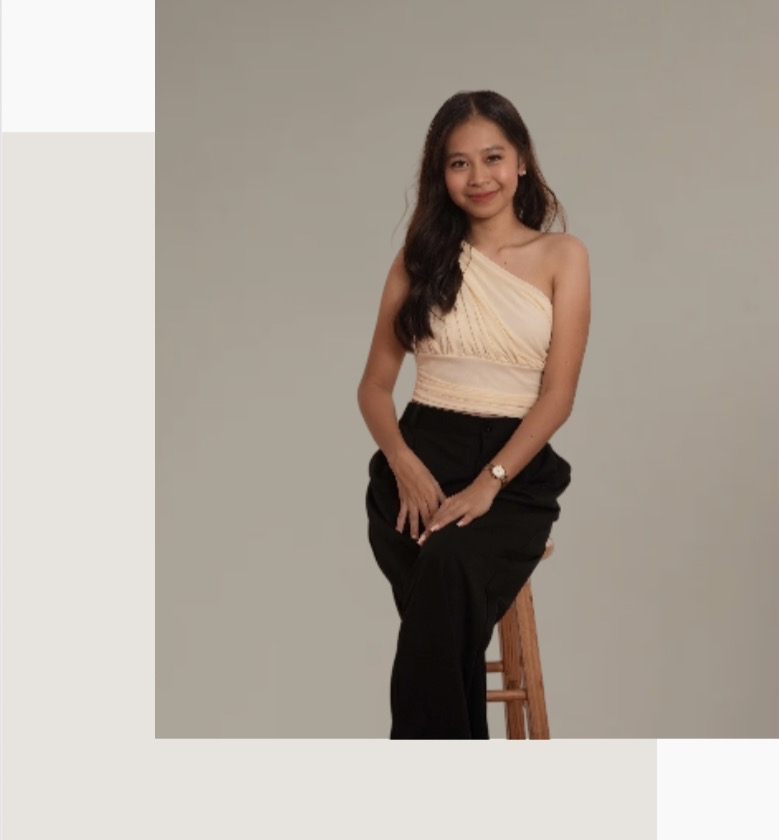
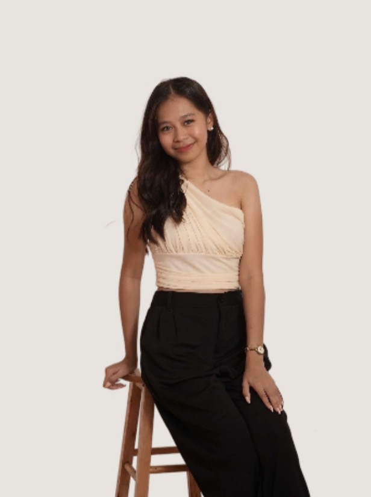
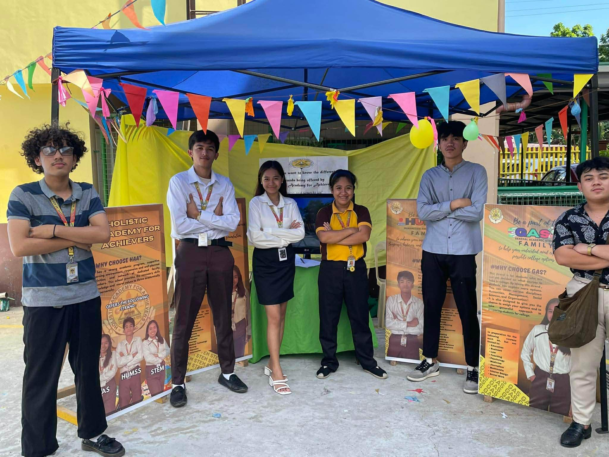
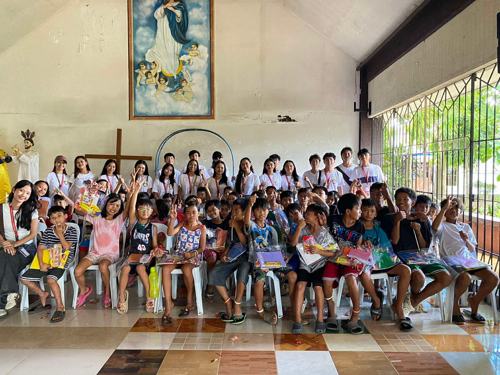

I enjoy connecting with others, exploring new skills, and making ideas happen.
I am a second-year Computer Engineering Technology student who enjoys designing and sometimes participating in doing projects. I'm good at managing my time, and I always try to show dedication in every project I do. I like collaborating with others and taking on new challenges, it helps me learn and improve. I also hope to continue developing my skills and learning new technologies so I can grow in my field.


This project is an exhibit where I contributed by editing and designing the tarpaulin. I used my creativity to create a design that relates to our project theme. The exhibit focuses on different academic strands, where we explain why students may choose a certain strand and what it offers.

This project is a community outreach activity where our group selected one barangay and connected with 30 children as participants. We provided simple assistance with school supplies to support their education.
If you have any questions or want to collaborate, feel free to message me anytime.